Click on the link below to see a video tutorial on Youtube. Feel free to Pause, Rewind, or Restart this video at anytime!
Become The Master: Eiffel Tower on Youtube 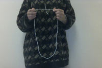 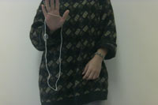 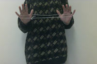 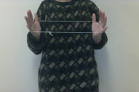# 1: Start with the string behind your thumb, over the palm of your hand and behind your pinkie. Do the same thing with the other hand. Then pull your hands apart.
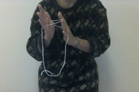# 2: With the middle finger on your right hand, reach across to the left hand and hook under the string that runs across the left palm.
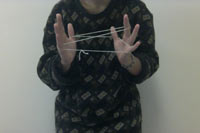# 3: Pull your hands apart.
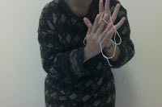# 4: Do the same with your left hand. Reach your middle finger on your left hand, reach across to the right hand and hook under the string that runs across the left palm.
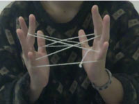 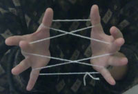# 5: Pull your hands apart again.
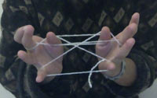 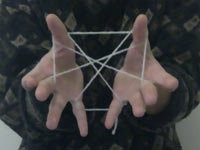# 6: With your thumbs, reach over the first pointer finger string and under the second pointer finger string. Pull your thumbs back towards your body. There should be two loops on each thumb.
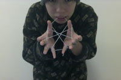 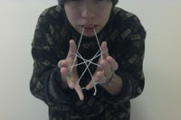 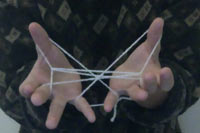# 7: Using your teeth pull the bottom string off your thumbs and pass it over the top string.
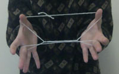# 8: Next, drop the loops off both pinkie fingers and pull your hands apart.Tilt your thumbs up. This is called cup and saucer because it looks like a cup resting on a plate.
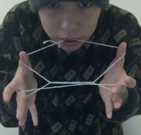# 9: Use your teeth to grab the top string (the string closest to you).
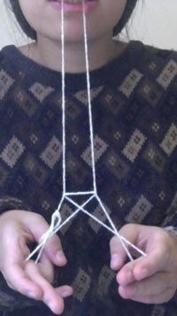# 10: Drop the loops off your thumbs and pull downward with your hands and up with your mouth.You've made the Eiffel Tower!